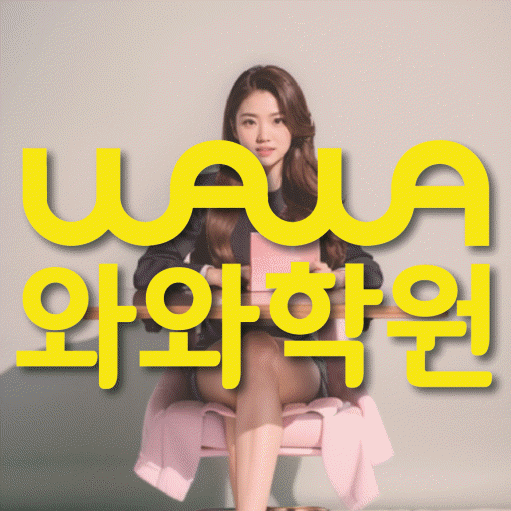

MIDDLE MATH
봉담읍 중등 수학학원
봉담읍 중등 수학학원 선택 전 개념 복습부터 예습까지, 개념 연결과 오답 원인·재풀이 진단, 학교 시험·누적 유형 문제 순서와 센터·가능 학년 확인 기준을 살펴보세요.
01 Quick answer
봉담읍 중등 수학: 개념 복습부터 예습까지
봉담읍에서 ‘개념 복습부터 예습까지’를 판단할 때는 점수보다 최근 수학 풀이를 먼저 봐야 합니다. 진단 자료: 틀린 문제를 개념·조건·계산·시간으로 나누고 첫 풀이와 수정 풀이를 함께 보존하세요. 이번 행동: 같은 날의 풀이 수정과 며칠 뒤의 새 문제 재확인을 서로 다른 일정으로 적으세요. 재확인: 정답을 기억하지 않은 상태에서도 비슷한 문제의 풀이 순서를 설명하는지 확인하세요.
확인 기준
봉담읍 학습 계획은 개념 연결 자료와 오답 원인·재풀이 질문에서 시작하고 센터 조건은 마지막에 따로 확인합니다.


 010-6839-8283
010-6839-8283학습 답변 요약
핵심 주제는 ‘개념 복습부터 예습까지’입니다. 개념 연결과 오답 원인·재풀이의 출발 상태를 확인하고 선수 개념·단원 연결과 서술형 풀이의 실행 기록과 학교·센터 사실을 분리해 살펴봅니다.
봉담읍 중등 수학 진단: 개념 복습부터 예습까지
봉담읍 중등 수학 상담의 첫 주제는 ‘개념 복습부터 예습까지’입니다. ‘공식의 이름은 알지만 적용 조건과 개념 사이의 관계를 자기 말로 설명하지 못하는지’를 묻고 정답 수보다 답을 고른 과정을 확인하세요.
다음으로 ‘틀린 문제를 다시 풀어도 개념·조건·계산 중 원인을 구분하지 않아 같은 실수가 남는지’를 따로 확인하고 두 답이 모두 흔들리면 개념 연결과 오답 원인·재풀이를 한 과제로 묶지 말고 먼저 설명할 영역을 고르세요. 일주일 뒤에는 ‘개념 복습부터 예습까지’에 해당하는 새 문제도 혼자 시작하는지 다시 확인합니다.
개념 연결 기록과 오답 원인·재풀이 문제를 함께 살피는 순서
많은 자료보다 역할이 다른 두 기록이 낫기 때문에 ‘개념 설명 메모와 대표 문제에서 해당 공식을 선택한 이유’는 출발 상태, ‘첫 풀이, 오류 원인 표시와 해설을 덮고 다시 푼 풀이의 차이’는 풀이 과정으로 두고 같은 날짜 기준으로 비교하세요.
첫 기록과 재풀이 기록을 비교할 때는 ‘풀이를 보지 않고 개념의 적용 조건과 사용 이유를 설명하는지’에 답한 근거와 ‘정답을 기억하지 않은 상태에서 비슷한 문제의 풀이 순서를 다시 설명하는지’의 변화를 함께 봅니다. 그 차이로 계속 보완할 부분을 판단하세요.
개념 연결과 오답 원인·재풀이의 내신 일정과 재확인일을 나누는 기준
학교 시험과 누적 유형 문제는 같은 문제 수로 계획하지 않습니다. 각각의 자료에서 ‘내신 범위의 필수 개념과 누적 유형 문제에서 다시 등장한 선수 개념을 구분해 연결하는 기준’과 ‘내신 범위 오답과 누적 유형 문제 누적 오답의 재확인 날짜를 다른 일정으로 관리하는 기준’이 필요한 지점을 찾아 완료 기준을 나누세요.
주간 계획에는 개념 연결과 오답 원인·재풀이의 최소 행동을 각각 한 줄로 남깁니다. 시험 뒤에는 점수보다 근거·시간·독립 수행 기록의 변화를 비교하세요.
시험 달력에는 ‘개념 복습부터 예습까지’에 필요한 개념 연결 확인일과 오답 원인·재풀이 다음 점검일을 따로 표시하세요. 마지막으로 개념 연결과 오답 원인·재풀이의 완료 기록을 나눠 보고 재확인 기준을 통과하지 못한 영역만 이어 가세요.
봉담읍 센터 정보 확인과 개념 연결 상담의 구분
상담 준비용 중학교 명칭이 공개돼 있지 않습니다. 재학 학교·시험 범위·현재 진도를 직접 알려 주세요.
제공 자료의 수학 가능 학년 표기는 중1·중2·중3이며 선수 개념·단원 연결과 서술형 풀이의 실제 개설 여부와 시간표는 상담 시점에 다시 확인하세요. 확인할 센터는 와와학습코칭센터 봉담점이고 제공된 위치는 경기 화성시 봉담읍 상리중심상가길 28-8 713호 와와학습코칭학원입니다. 와와학습코칭센터 봉담점 학습 계획과 별도로 교습비 자료의 기준과 현재 시간표가 같은 시점의 정보인지 확인합니다.
개념 연결에서 오답 원인·재풀이로 이어지는 7일 실행안
첫 주에는 ‘개념 설명 메모와 대표 문제에서 해당 공식을 선택한 이유’에서 한 가지 병목만 고릅니다. 실행 항목은 ‘정의·조건·대표식을 한 줄씩 연결한 뒤 조건이 바뀐 문제에 같은 개념을 적용하기’이며 새 교재나 추가 문제는 재확인 뒤에 결정하세요.
7일째에는 ‘풀이를 보지 않고 개념의 적용 조건과 사용 이유를 설명하는지’를 첫 기록과 대조합니다. 변화가 없으면 문제 수를 늘리지 말고 ‘정의·조건·대표식을 한 줄씩 연결한 뒤 조건이 바뀐 문제에 같은 개념을 적용하기’의 순서를 단순화한 뒤 다시 확인합니다. ‘개념 복습부터 예습까지’의 첫 행동은 같은 날의 풀이 수정과 며칠 뒤의 새 문제 재확인을 서로 다른 일정으로 적으세요. 다음 판단에서는 정답을 기억하지 않은 상태에서도 비슷한 문제의 풀이 순서를 설명하는지 확인하세요.
상담에서 개념 연결과 오답 원인·재풀이를 확인하는 순서
시험지에서 막힌 위치를 표시해 상담에 가져갑니다. ‘공식 암기와 개념 이해를 어떤 질문과 풀이 기록으로 나누어 확인하는지’를 먼저 묻고 ‘오답 기록의 분량보다 원인 분류와 새 문제 재확인을 어떻게 연결하는지’를 다음 질문으로 둡니다.
상담 뒤 학생이 개념 연결의 첫 행동을 설명하게 하세요. 오답 원인·재풀이를 다시 확인할 날짜와 센터 이용 조건은 서로 다른 칸에 적습니다.
- 학생 자료개념 설명 메모와 대표 문제에서 해당 공식을 선택한 이유
- 시험 계획학교 범위표와 오답 원인·재풀이 연습 완료일·재확인일
- 재확인선수 개념·단원 연결 확인 날짜와 학생 설명 기록
- 이용 조건수학 가능 학년(중1·중2·중3)·시간표·교습비·통학 동선
02 Parent perspective
봉담읍 중등 수학 학부모 상담 상황
아래 봉담읍 중등 수학 상담 장면은 실제 이용 후기나 특정 학생의 성과가 아닌 준비용 가상 예시입니다. 학습 결과는 학생의 출발점과 실천 정도에 따라 달라질 수 있습니다.
봉담읍 학생의 학교 시험과 누적 유형 문제 일정이 겹친 가상 상황입니다. 학부모는 ‘개념 복습부터 예습까지’를 기준으로 개념 연결을 먼저 배치하고 오답 원인·재풀이의 최소 복습일을 따로 정합니다.
제공 주소까지의 이동 시간을 확인하는 봉담읍 가상 상담입니다. 통학·시간표와 수학 가능 학년(중1·중2·중3)을 먼저 적은 뒤 오답 원인·재풀이의 확인 질문은 별도 칸에 둡니다.
03 FAQ
봉담읍 중등 수학 자주 묻는 질문
학생 자료, 가능 학년과 실제 이용 조건을 나누어 답했습니다.
봉담읍 중등 수학에서 ‘개념 복습부터 예습까지’는 어떤 자료부터 확인하나요?
먼저 ‘개념 설명 메모와 대표 문제에서 해당 공식을 선택한 이유’가 보이는 자료 위치와 날짜를 적습니다. 이후 ‘정의·조건·대표식을 한 줄씩 연결한 뒤 조건이 바뀐 문제에 같은 개념을 적용하기’를 수행하고 ‘풀이를 보지 않고 개념의 적용 조건과 사용 이유를 설명하는지’에 학생이 혼자 답하는지 확인하세요.
개념 연결과 오답 원인·재풀이 진단 기록은 어떻게 나누나요?
한 표 안에서도 개념 연결과 오답 원인·재풀이의 확인 근거와 다음 행동을 각각 다른 열에 적습니다. 같은 날짜 기록끼리 비교하면 원인이 선명해집니다.
학교 시험과 누적 유형 문제에서 개념 연결과 오답 원인·재풀이 비중은 어떻게 나누나요?
내신은 개념 연결에 필요한 범위 자료와 마감일을, 누적 유형 문제는 오답 원인·재풀이에 필요한 새 문제와 재확인일을 중심으로 기록합니다. 두 기록 모두 ‘내신 범위의 필수 개념과 누적 유형 문제에서 다시 등장한 선수 개념을 구분해 연결하는 기준’과 ‘내신 범위 오답과 누적 유형 문제 누적 오답의 재확인 날짜를 다른 일정으로 관리하는 기준’을 확인 기준으로 사용하세요.
상담 전 선수 개념·단원 연결과 서술형 풀이를 확인하려면 어떤 자료를 가져가나요?
선수 개념·단원 연결은 ‘최근 문제에서 다시 필요해진 선수 개념과 현재 단원 풀이가 끊긴 위치’, 서술형 풀이는 ‘서술형 초안에서 생략된 조건·등식·결론과 수정한 답안’이 남은 최근 자료로 확인하세요. 이어 ‘정답뿐 아니라 서술형의 논리 순서와 누락 조건을 어떤 기준으로 풀이 과정을 확인하는지’를 묻고 확인일을 정합니다.
봉담읍 중등 수학 상담에서 가능 학년과 참고 학교는 어떻게 확인하나요?
봉담읍 페이지 제공 자료에는 수학 중1·중2·중3이 가능 학년으로 기재돼 있습니다. 현재 중등 수학 시간표와 반 구성은 등록 전에 다시 확인하세요. 제공 자료에는 참고 학교명이 없습니다. 학생이 다니는 학교의 범위표를 가져가 현재 수업에 반영할 수 있는지 확인하세요.
04 Related
봉담읍 관련 학원·상담 페이지
같은 지역의 과목 조합과 학년 카테고리, 앞뒤 지역 안내를 함께 확인하세요.